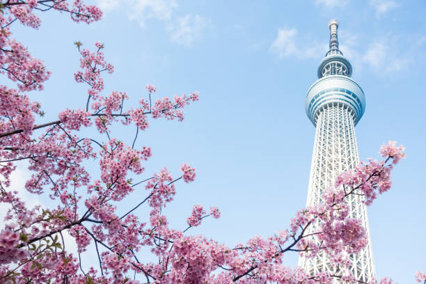

Tokyo
Tokyo is the capital of Japan. Tokyo houses about 10% of Japan's population. If you include the greater Tokyo metro area of Kanagawa, Saitama, and Chiba, the total population of Tokyo reaches 38 million people!
Metropolitan areas with a population of over 10 million are called megacities, and currently, there are 37 of them dotted around the planet. Included in this number are Tokyo, Osaka, and Nagoya, Japan’s three biggest cities.
While Japan is currently experiencing a decline in the population overall, Tokyo is an exception and keeps growing, boasting the largest number of people of all the cities in the world.
